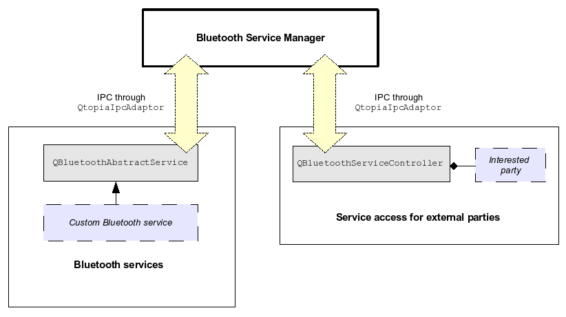

| Home · All Classes · Annotated · Functions |
Qtopia's Bluetooth infrastructure includes a framework for creating and managing Bluetooth services inside Qtopia. This framework allows Bluetooth services to be handled consistently within Qtopia. It also provides mechanisms to allow programmers to easily create and register custom Bluetooth services within the framework, and control and configure existing Bluetooth services.
To create and register a custom Bluetooth service within this framework, simply subclass QBluetoothAbstractService. The service will then be treated as any other Qtopia system Bluetooth service, which means:
It is not necessary to understand the architecture of the framework to create a custom Bluetooth service or access information about existing services. However, this may be useful if you need to delve into the source code.
Essentially, there are three distinct components in the framework, as shown in this diagram:

At the core is the Bluetooth Service Manager. This manager is created as a Qtopia task by QPE at start-up and thus is always present. It takes the central role within the framework; it is contacted whenever a Qtopia Bluetooth services is started, stopped, etc. and acts upon requests by external parties to start and stop services. It communicates with other components within the framework using Qtopia's Interprocess Communication (IPC) mechanisms.
The service manager is also responsible for storing and loading persistent service settings in the BluetoothServices.conf configuration file. A default configuration file is provided at etc/default/Trolltech/BluetoothServices.conf. This can be modified to provide default settings for services.
Each Qtopia Bluetooth service has a two-way communication link with the Bluetooth Service Manager. A service notifies the manager when significant service events have occured, such as when the service has started or stopped. The manager notifies a service when it should perform a particular operation, such as when the service should be started or stopped. A service should not start or stop by itself, so that the service manager can control and track the state of the service. (The service manager will automatically tell a service to start when it is created.)
All communication between the Bluetooth services and the service manager is handled internally within QBluetoothAbstractService. When a custom Bluetooth service is created by subclassing QBluetoothAbstractService, all IPC communication aspects will be initialised transparently, and communication with the service manager will appear to the custom class as signals and method invocations. (The IPC aspects are handled by QBluetoothServiceControl and QBluetoothServiceControlServer, which use the IPC QAbstractIpcInterface essentially provided by QAbstractIpcInterface and its associated classes.)
Finally, the QBluetoothServiceController class in the Bluetooth library provides service access for external parties. The interface of this class allows interested parties to control a Bluetooth service (e.g. start or stop it) or access information about the service (e.g. its security options or state). For example, Qtopia's Bluetooth settings application uses this class to start and stop any Qtopia Bluetooth service and modify its security settings. For IPC, the QBluetoothServiceController class uses the QtopiaIpcAdaptor class to communicate service control requests to the Bluetooth service manager.
To create a custom Qtopia Bluetooth service, subclass QBluetoothAbstractService and implement the details for your service accordingly. See the class documentation for an example of implementing a custom Bluetooth service.
| Copyright © 2007 Trolltech | Trademarks | Qtopia 4.2.1 |